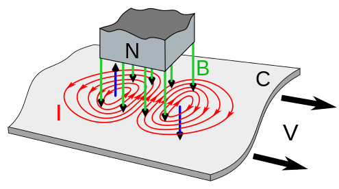

What is an eddy current brake?
For many mechanical systems where linear or rotational motion is present, a component is added to the assembly that allows the device to slow this motion. To do this, devices apply a force, often called a retarding force, that resists the motion of the moving element. In many cases, there are friction brakes, sometimes applied using cables (bikes) or hydraulic fluids (cars and other vehicles). But friction is not the only method of applying a retarding force on a rotating or moving element to oppose its motion. In the case of eddy current brakes, the retarding force is created using magnets, either permanent magnets or electromagnets.
Operational Physics: High Level
The effect of the magnetic field can be understood with several different equations, but most simply can be approximated by Lenz’s law. It allows us to predict the direction of a variety of electromagnetic effects but does not quantify the magnitude of the effect.
“(Lenz’s law) says that the direction of the electric current induced in a conductor by a changing magnetic field is such that the magnetic field created by the induced current opposes changes in the initial magnetic field.”Simply, this means magnets that move near conductors create magnetic fields that slow down their motion. If you accept that the permanent magnet induces an electric current in a moving conductor, Lenz’s law allows us to predict that there will be a retarding force that resists the motion of the magnet relative to the conductor. This means that there is an opposite force applied to the conductor. In the case of the flywheel, this is a disk. 
{kind=link}
Why does the magnetic field induce a current?
If you consider each free electron in the metal, the motion of these charges can be understood using the Lorentz force. This equation states that for a charge, a force will be applied normally with respect to the plane created between the moving charge and direction of the magnetic field.
F = qV x B
This Lorentz force causes motion that can be predicted with the right-hand rule. From the perspective of the charge, the applied magnetic field goes into the conductor, and the conductor moves orthogonally with respect to the charge. This causes a force on the charge normal to the other two.
If you complete this process for each free charge in the material, you can see circular rings of moving charges in the conductor. These moving charges cause a circular current, whose magnitude also changes over time. This changing current causes its own magnetic field, which opposes the applied field. In the diagram above, the blue arrows point in the direction of the induced magnetic field.
The eddy current density is modeled by the following, where is the conductivity, and J and E are vectors representing the current density and electric field intensity respectively.
J = σ x E
The braking torque is then described by the following, where B is the magnetic flux density, and r is the radius of the disk.
T = (J x B) ⋅ r
Modeling and Implementation
To predict the field of the disk and eddy current rotor, we used a physics simulator called COMSOL. This simulator uses a parametric solver to calculate the equations above (simplified for clarity) and a series of more complex interactions across the material at each step in time. For the final model, our input parameters were the following.
| Parameter | Thick Disk (Flywheel) |
Thin Disk (Eddy Current Rotor) |
|---|---|---|
| Thickness | 52.25 mm | 3.17 mm |
| Radius | 74.25 mm | 74.25 mm |
| B Field | 4 T | 4 T |
| 90% Spindown | 10 s+ | ~2 s |
| RPM | 1000 | 5000 |
These factors were computed using the parametric solver to inform part selection for the eddy current disk. This first iteration represents the case where the disk itself is used as the power dissipation material and the inductor. The current density (proportional to induced B field) is shown throughout the volume below.

“...loss and thus the braking force increase significantly, if the pole pairs are drawn nearer to each other. Therefore, if the aim is to attain a braking force as great as possible, the two poles should be set as near to each other as possible.”Our simulator also allows us to verify this conclusion. The plots below show the angular velocity vs time during the first few seconds of the motion of the conductor.
The plot for the Flywheel

The plot for our thin braking disc
Conclusions
As with all modeling, it is important to consider the factors of error in the system. For this simulation,
errors in B-Field calculation and RPM are likely the largest factors that will affect results. In this simulation,
a B-field of 4T is (arguably) an overestimate for the B-Field achievable in this system. This magnitude was chosen
to accentuate the braking effect and choose between a thin and thick conductor. For unknown reasons, the solver was
unable to solve solutions with a thick conductor over 1000 RPM. For the thin conductor though, the higher RPMs represent
a more realistic scenario that the disk would encounter. During our testing, we have hit upwards of 5600 RPM.
Generally, these models were made to inform part selection, and not to quantify theoretical performance. For this purpose,
they succeeded in allowing us to pick a thin conductor over the default configuration.